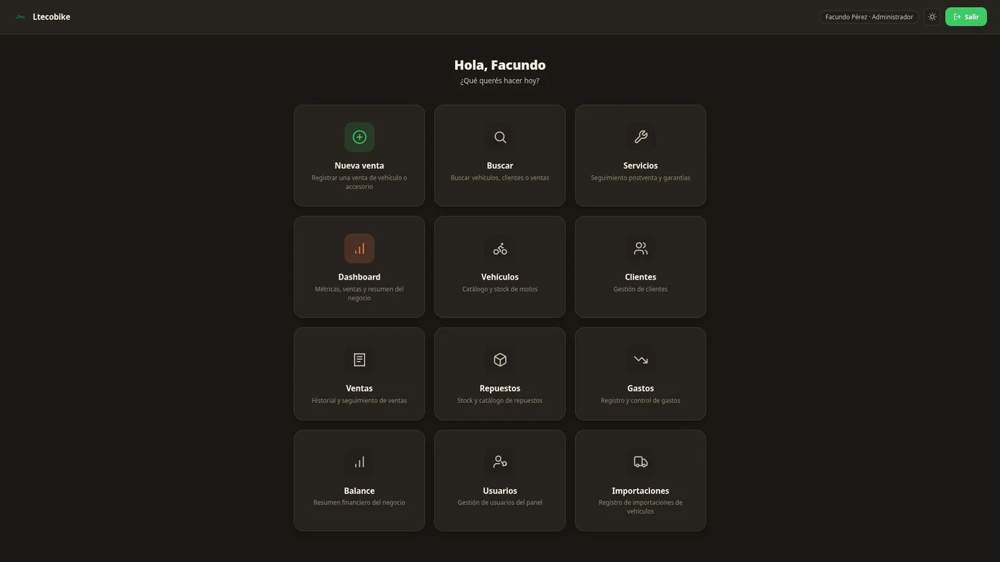
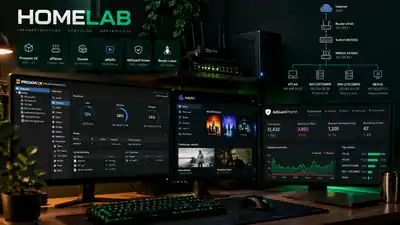

Ltecobike — Sistema de gestión
Desarrollo y mantenimiento de un sistema para una empresa familiar: operaciones, clientes, vehículos, inventario y catálogo web.
Ver caso y videoDesarrollo, infraestructura y automatización: cuatro trabajos con alcance, evidencias y estado explicados sin exagerar lo que está implementado.
Cada ficha incluye contexto, decisiones técnicas, material disponible y límites de la demostración.

Desarrollo y mantenimiento de un sistema para una empresa familiar: operaciones, clientes, vehículos, inventario y catálogo web.
Ver caso y video
Prácticas con VMs, contenedores, DNS, acceso remoto, firewall virtualizado y análisis de fallas.
Explorar arquitectura
Marketplace de escritorio con roles de administrador, empresa y cliente; participación en infraestructura y entorno de datos.
Ver demo y alcancePrototipo con sensores y control local, más panel web y simulador independientes. Etapa hidráulica pendiente.
Ver prototipo